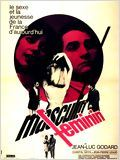
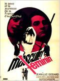

Early life
Godard was born in Paris on December 3, 1930, the second of four children. After receiving his primary education in Nyon, Switzerland, he studied ethnology at the Sorbonne, but spent the vast majority of his days at the Cine-Club du Quartier Latin, where he first met fellow film fanatics Francois Truffaut and Jacques Rivette. In May 1950, the three men united to publish La Gazette du Cinema, a monthly film journal which ran through November of the same year; here Godard printed his first critical pieces, which appeared both under his own name and under the pseudonym Hans Lucas. With Rivette's 1950 short feature Quadrille, Godard made his acting debut, also appearing in Eric Rohmer's Presentation ou Charlotte et son Steack the following year. (Jason Ankeny - allmovie.com)
 
